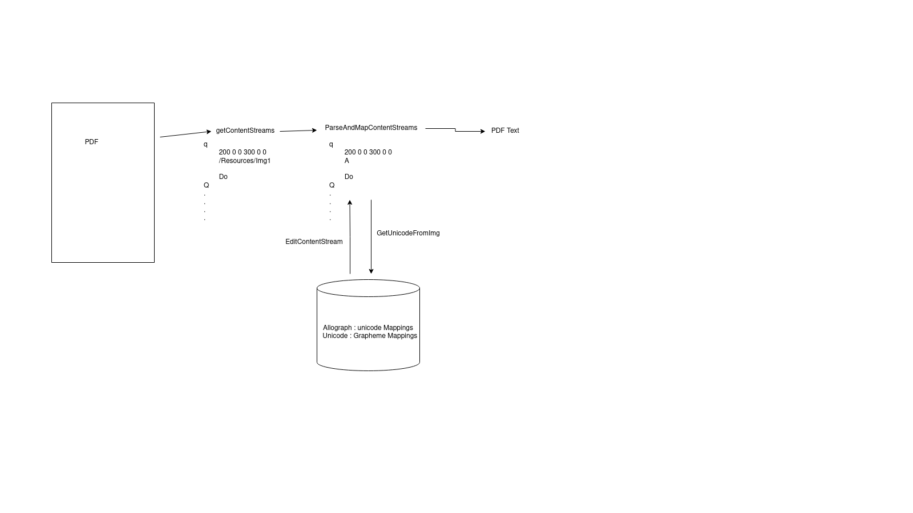
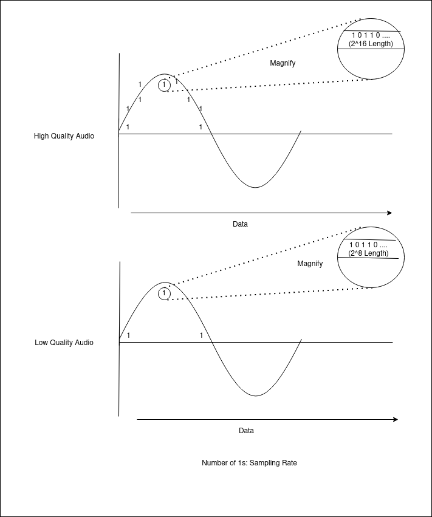
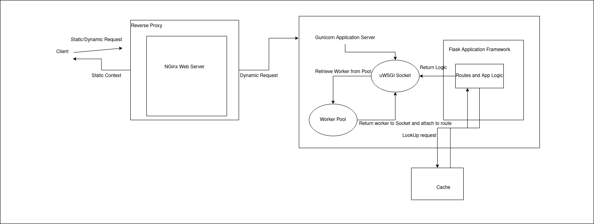
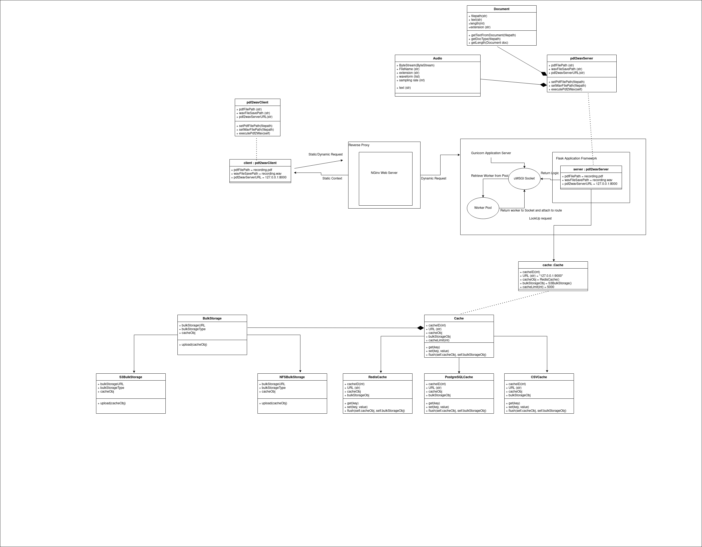

Building a PDF to Speech API in requests, Flask, Redis, and Nginx
I enjoy reading books, and have a tough time multitasking between looking down at my phone and going about my day to day chores.
This lead to the building a simple API endpoint that could take any book saved as a pdf, and apply text to speech on top of it in order to return an audio recording of that book.
This API is still in it's nascent stages and under development, and was more of an oppurtunity to figure out a production grade API setup(Flask, Ngnix and Gunicorn),
learn and apply a few design patterns, figure out bare bone implementations of the different types of caching mechanisms, design readable flowcharts, and investigate the internals of popular file extensions like the .pdf, .docx and the .wav file. I also got to build an API unit testing library using pytest and requests.
It took me a great deal of effort to get a rough idea of all of the above, and it's a goal of this post to reduce the amount of work nessecary to replicate something like the above.
Without further ado, Here's a brief idea of what this post will cover:
1. What is a Document - Converting any type of document into a piece of text
A document at its simplest form is a file object that stores both textual and non textual context in a structured or unstructured format.
Different types of documents have different structures, and require different text extraction approaches. The .pdf file type is the most likely to be unstructured, and requires an understanding of how individual shapes and markiungs build together to form individual sentences and paragraphs within the document.
The below diagram depicts how a pdf is broken down and parsed in order to group individual pieces of makrings together into one blob of text.

PDFs are initially broken down into a collection of content streams, and these streams are parsed as above. Content Streams are groups of characters that when parsed in a recursive fashion form a psedo language. More about this language can be found here:
On the other hand, docx files come in built with a XML representation that can be easily parsed into a text variable. HTML files also have a similar representation, differing in the name of the node that produces the text in the first place.
2. What is a wav file - wav file format -Dealing with wav files in Scipy, How do Sampling Rate and Wave Form combine to make one .wav file, using TTS in Python - https://stackoverflow.com/questions/53460512/python-waveform-to-wav-file-converter
Wav files are audio storage files. Whenever audio is stored, transformed, or heard, there are almost always 3 variables at play. The sampling rate, the waveform that has the sound signal, and the bit depth.
A .wav file has a specific format, akin to that of the format that a network packet has, but with completely different fields. There is a data field, that contains the waveform itself, and the other fields act as configurations on top of this data field, defining attributes such as bit depth(the number of bits used to represent a single sample), the sampling rate in hz, the encoding type(PCM or not) used to convert the waveform into a digital signal given the sampling rate, and the file size.
The below diagram connects the concepts of waveform, signal rate, bit depth to audio quality as a whole:

3. WebServers and Application Servers - Why Flask isn't Enough - How does flask fit into Nginx, UWsgi and Gunicorn
Flask is a great web application microframework built on top of wSGI(web server gateway interface). It is NOT a webserver, though it comes built in with Werkzeug. A microframework is a type of framework that is both simple in its usage and implementation. but is made for extensibility. This means that you decide a lot of the things that you want your webapp to interact with, be it with the type of database it interacts with, or if you want to abstract all of your database logic into an ORM etc.
The meat of the business logic that actually parses the pdf, and creates the wav file lives within an endpoint, that is implemented through flask.
We take this logic, and attach it to a route, that the client can use to communicate with the business logic itself.
This sounds straightforward, and even works to an extent. But there are several assumptions we've made that dont make this approach ideal. Some of these assumptions are:
1. Traffic is uniform, and is always to the endpoints that we write within the flask application file. This is false. When an application is pushed to production, it faces the internet, that can inject this hypothetical server with content that is not meant to be consumed by the business logic itself. Some of this can include static content requests, malicious data, SQL injections, and requests for sensitive data.
2. Flask can reliably serve static content. Flask works with a single worker, and is not designed to handle high traffic. While it can serve static content, It cannot do this while serving business logic.
3. Flask is https enabled. It is not.
To mitigate all of the above, there should exist some sort of a reverse proxy, that can reliably serve static content, and also deal with requests that the application should not take care of. It should also be able to handle high traffic.
Ngnix solves this.
However, if we do end up using ngnix, there should be a way for nginx to communicate with the application logic that lives within flask. There does exist an interface for this, and it is called the web server gateway interface(wsgi). While flask does come inbuilt with an application server that has wsgi enabled, it's designed to handle only one request a time. This still looks like a bottle neck. A solution to this is to repurpose this application server, so that it assigns more workers to a single request, and also use some kind of worker pool to handle concurrent requests to the same route.
A relatively easier way of imagining this situation is if the number of ports that the Flask app listened to exponentially increased overnight, and if there was some sort of a controller who decided which port got assigned which request.
Lucky for us, we don't have to repurpose anything. This application server exists, and is called gunicorn. It is wsgi enabled and can communicate with both nginx and the flask application code.
Put altogether, this setup looks something like this.

4. Caching - Why cache and what are the different types of caching? Saving and Loading wavforms from redis or Saving and Loading files from the server filesystem.
Extracting text from a pdf, then passing that to a text to speech converter, then attaching the byte object obtained into a response object seems like a process that takes a non trivial amount of time. However it is deterministic(2 identical inputs, will always give you the same output). If an API is deterministic, then caching is something that almost always makes sense. If 2 clients enter the same document, do I choose to process them as if the application has never seen the document before, or return a cached response the next time an already processed document is provided? If the user is okay with the final result being stored, then it seems like the obvious option to allow it for that document, and for that user only. It is completely possible for the same document to be cached and not cached for 2 different users, who coincidentally uploaded the same document.
For the time being, the API caches everything, and does not have the concept of a user, though implementing one would be fairly straightforward. Credentials specific to some user would be verfiied by a database and a hash check, and every subsequent request is either done in lieu of caching being enabled or disabled.
Caching can be implemented in several ways, especially for file objects. Some of these methods include:
1. Filesystem Caching( NFS, EXT4)
2. Relational Database Caching( PostgreSQL Blob)
3. Non-Relational Database Caching( MongoDB)
4. In memory data store( Redis)
5. Bulk Storage (S3, gridFS)
We look at 3 of the above:
File System Caching:
Filesystem caching is the most straightforward. If I can store the output wav file I get within a directory, or a remote file system, and keep track of the same using an external registry(mapping between filename and document hash), then I have a way of instantaneously returning the response object from this filesystem instead of recreating the wav file from scratch.
This approach is not only straightforward, but also efficient in most circumstances.
The problem lies in a situation when filesystems starts running out of space. Read/Write performance drops significantly with increase in the number of files saved in total.
Bulk Storage Caching:
For every request that you get, storing every output you get in a S3 bucket and adding this operation in a registry also seems to be a viable caching option.
However, this is not a cheap operation, both in terms of latency and out of pocket expenses. Both GET and POST requests involve a network call, and ideally should be minimized as much as possible. Filesystems can be configured to communicate within the same network, and this removes the need for a network call altogether.
There are arguments that favor this method of caching as well. Depending on how reliable the provider is(Azure Storage, S3 Storage are reliable), it is reasonable to assume that the files uploaded are secure, atleast more secure than your local filesystem.
On the same note, locally run filesystems can crash, and end up purging all your data with it. The chances of that happening with a reputed cloud storage provider is, at the least very unlikely. Depending on how long a file can be allowed to persist, using bulk storage as a cache remains as a viable option, albeit an expensive one.
In Memory Caching:
There are Key-Value datastores that are deployed within the same machine, and provide very quick Reads due to their in memory nature. These datastores can be split up in different ways, either making groups within the keys itself and assigning one group of keys to one machine(Read Scaling) , or replicating the contents entirely and deploying these replicas on different machines(Write Scaling). This is called Sharding and Replication respectively.
Sharding becomes vital in one of the below scenarios:
1. System failures due to a spike in traffic. A spike in traffic translates to a greater number of queries for a single machine to handle, or a limit to the amount of data that the database can store in a signle instance.
2. A lack of redundancies when these system failures happen.
While the above may paint the in memory key vaue store as a fantastic caching option(which it is), there are a few disadvantages to be wary of.
1. There is only so much data that an in memory keyvalue store can contain before it has to push it to a persistent storage that has a lot more capacity.
2. RAM is limited and expensive, and cannot be vertically scaled easily.
This link recounts a developers experience in scaling redis, and the different ways in which this can be achieved.
For this project, we make use of an in memory key-value store called redis.
Caching Mechanisms:
All of the above methods to cache files can be templated into a process that looks like this:
1. Process Request
2. Ascertain that the request has not been processed before. Look into the cache storage utility.
3. If its there, great! This is called a Hit, and the result is the previously computed object.
4. If its not there, process the request, then add the result in the cache, and then return this value back to the caller. This is called a cache miss.
This mechanism of caching is called Lazy Loading, and the central idea revolves around it's reliance on the requests it's seen in the past. The cache starts empty and populates over time.
As expected, this reduces the amount of data that you store in the cache in the first place. If the request has not been seen yet, Why do i have to cache it?
This however also means that a cache miss is possible when an unseen request is come across. A cache miss introduces a penalty, by saving the missed request in the cache.
An alternative approach is to prepopulate the cache using some heuristic. A common heuristic is to update the cache whenever a database is written to. While there is no database here, the idea can be extended to prepopulating the cache with very common documents.
On one hand, the cache is always populated with recent data, and is never stale.
On the other hand, most of this data is never interacted with, so it's sometimes a waste of resources.
This type of caching is called Write-Ahead Caching.
More about caching mechanisms can be found at https://docs.aws.amazon.com/AmazonElastiCache/latest/mem-ug/Strategies.html.
For this Project, we use a lazy loading based caching mechanism.
Incorporating the above, the API now looks like this:

6. Dealing with change - A primer on a few important Design Patterns and Principles and their usage in this context (Dependency Injection, Dependency Inversion, Strategy, Visitor, Facades, Adapters)
What is change?
I've been a developer for 1.8 years. Not at all a long time. But if there's one thing that I've noticed, it's the fact that code is
1. Hard to add code to
2. Hard to remove code from
3. Hard to change code from state to another, without breaking what already works.
Building this API without accounting for the above was, and would have been a nightmare. To illustrate this, suppose the document to text functionality that we developed above was one large function, instead of the class it is right now(It's not supposed to be just one class, It's supposed to be multiple. We will get back to this!).
Suppose there is a new document type that's been released, maybe called .gtf(Good Text Format). The goal now would be to add code to this function to do 2 things.
a. Determine if the document proved is of the .gtf type.
b. Extract Text from the .gtf type.
It's possible to do the above by adding an additional 'if' condition to detemine document type, and a code block under this that has the business logic to extract from the .gtf type.
The above is not bad design but not good design. It works great if the code block that explicitly determines document type is very small. It works great if this small block of code is not a representative of how document type checking is done through out the application. It works great if i don't have to move this code block across projects.
Sadly, none of the above is a real world scenario, unless you're building a pet project.
So, let's add a layer of abstraction. Let's have a document class, and add this function in this class. What changed? To be honest, not a lot. I still have to add if conditions for document type checking, I still have to add custom business logic within this code block for text extraction. What I dont have to do anymore, is do this for all instances where this function has to be used across the code base. I do this once per document type, and It ends there.
Can I do better? Yes! An improvement to the above would be introducing something called inheritance, that defines individual sub classes for document types, and have each of these subclasses override the method for text extraction. In this way, we ensure Liskov;s subsitution principle(L in SOLID), make this code modular, and decouple the document object entirely, atleast in this project. We also achieve single dispatch, where the method operation is governed by the calling object, even if 2 different calling objects call the same method.
There does exist a caveat, or a situation. Suppose parallel to the document class, there existed a filter class, that blacklisted certain words based on the type of filter subclass we implement. This would invlove adding a method called blacklist within the abstract document class, that took an object of a subclass of Filter as input. It would look something like this.
Class AbstractDocument:
@Override
def filter(self, FilterType1 &filtertype1):
text = self.getText()
filteredText = filtertyp1.blacklist(text)
return filteredText
@Override
def fitler(self, FilterType2 &filtertype2):
text = self.getText()
filteredText = filtertyp2.blacklist(text)
return filteredText
The keyword here is abstract, and the idea is that as long as ALL the document types are subject to same type of porcessing from the Filter class, introducing an abstract class removes the need to introduce Filter methods to each interface, and instead just a one time addition to the abstract class.
Dare I say can I do even better? Yes! We notice that the above still has a problem; Anytime I want to add a new method to each document class, that does NOT have the same implementation across each document subclass, I have to do this following:
1. Go to the interface.
2. Add the method.
3. Implement this Method.
This MIGHT not be ideal. One could argue that this forces manual investigative work that might be needed. Most argue that this is cumbersome.
So how do I circumvent this?
The first thought that came to my mind, was to imagine this scenario as a marriage between 2 classes, such that the behavior of the second classes methods depended on the sublcass of the first class passed into these methods.
This link describes the marriage well: https://stackoverflow.com/questions/33456948/when-should-you-really-use-the-visitor-pattern. It is in other words, a n*n matrix where n is > 1.
Now, the central idea is to have this function be in one place, and have this one "place", provision reimplementing the function based on what sort of object is given to this function.
Well, I'm still adding the sublcass level implementations. What's changed is the fact that the class the algorithm is operating on, has not changed it's initial interface contract.
If i call this class "Visitor", and use method overriding to change implementation specifcs based on the object passed to it, I have essentially introduced subclass specific algorithm behaviour to each type of subclass, without changing the subclass interface. This is called the Visitor Design Pattern, and is usually the SOTA in decoupling the class that does something from the class that has something done to it.
This covers how I would go about implementing and decoupling the document object individually from the client or server class within the application entirely.
There are still problems however.
1. How would I go about working with high level interfaces, instead of concreate subclasses?
Do I depend on the document that I want to get the speech transcription out of to be a PDF file, or do I depend on the object that I want to get the speech transcription out of to be a document of some kind?
The answer to the above question sheds light on 3 concepts:
1. Reusability. How many different places within my codebase can I use an object of type Document, compared to an object of type PDF? Is there a significant overlap, and if so, does working with higher level classes ensure that you can work with larger parts of your codebase?
2. Readability. Is it easier for a new developer to understand a method that takes a document as input, or an object of type Docx?
3. Dependency. Within my codebase, do I often depend on my classes using an object of type Document, or an object of type PDF? Why? Could it be that designing for classes that don't change often, reduces the amount of change sourcing from a lower level class? Does it make more sense for my text extraction methods to work on an object of type Document, or type PDF? Why? Is it that the more lower level of a class that you work with, the more suspectible it is to changes in the future?
The answer to all the above, accroding to me, is Yes, and is more of a justification of using higher level classes instead of concrete ones. We interchangably use the word "depending" instead of using. And with that, we introduce a concept called dependency inversion.
In this context, dependency inversion involves the passing of a object of type Document to the text to speech method, instead of an object of type PDF.
2. How would I NOT assume the type of objects I work with, when I implement different classes?
Most classes can be visualized as a graph. Each node in this graph can be called a dependency, and each dependency can again be represented as a graph of dependencies.
The take away here is, I create this class with the motivation that my dependencies can change. I do not "fix" or "create" the dependencies that a class has to work with, but instead, "inject" these dependencies into the class.
This ensures that I do NOT assume what a class has to work with, except at a higher level. I can assume that this class would use maybe class SuperClass, instead of assuming that the class uses childClassB, or childClassA, where childCLassA and childClassB are child classes of class SuperClass. This reduces the amount of change that I introduce in this class. This process is referred to as "Dependency Injection".
In this project, the Server class is composed of a Cache Class, A BulkStorage Class(Under Development), and a Document Class. These are all Higher level classes that have child classes. I've "injected" an object of type "Redis"(The cache class), and another object of type "PDF", and a final one called "S3Storage", into the Server Object. In this way, I also ensure that I am open to extension, and closed for modification(Open Close Principle).
How would I introduce abstractions in the building of a client or a server object?
Is there a way I could "reduce" the amount of work that the client had to do to "build" the server class object they want?
For example, we looked at several caching mechanisms. We give the user several choices, ranging from using a S3 based bulk storage cache, to using a Redis based in-memory RAM based cache.
We also looked at the several different types of documents, ranging from PDF to the txt file.
Suppose we use another API to perform text to speech on the text extracted. We define that seperately in its own subclass.
If we visualize each of the above as dependencies of some kind, and treat each dependency as a node, we then obtain a graph that represents a class composed of each of these dependencies. Each end to end "Path" within this graph is one "way" of building a class of some kind. Applying it to this context, our Server setup would be composed of a cache of some kind, working with a document of some kind, and a TTS Api of some kind. One could say that the server class was composed of each of these objects.
What If i could identify each permuation of parameters given to the server class? Each permutation "builds" the server differently, and each permutation is identified by a single method or class that can easily be called.
In this way, I dont expose more than I have to the developer. I also make code more readable. I can version the building of complex objects by keeping track of selected components.
The flipside to this, is that it introduces another step in the object building process. And this might introduce complexities when you're modfiying the this selected "build".
Replacing the word "build" with "facade", we introduce the Facade design pattern.
This, in my opinion, "abstracts" dependency injection, by hiding the parameters injected, and the creation of these parameters itself.
Implementation wise, we define a class called ServerFacade, and then subclass ServerFacade, where each subclass contains one single permutaion of parameters. For example ServerRedisCachePDFProcessS3Bulk could be a facade that builds a server with a redis cache, s3 bulk storage class, and works with PDF documents only.
How do I introduce abstractions for running conditional pipelines?
We have a set of sequential instructions. For example, we first run a text extraction method on top of the document, then run a text to speech method on top of the result we obtained before.
This is called a pipeline. Suppose there are different methods for text extraction, and for text to speech. Then, a pipeline could compose of these methods instead. Maybe the type of extraction and the TTS API used is based on some heuristic.
It's important to note that each pipeline takes the same type of input at each stage. It's the combination of algorithms that change in this case.
It's also important to note that the object that calls these pipelines are of the same type.
Could we seperate each pipeline into its own class, called pipelineA or pipelineB, and have another class that allows one to set and execute a selected pipeline, called pipelineManager.
The pipelineManager class allows the client to make a pipeline of some sort, and set it as the pipeline to run if the execute method is called by the pipelineManager object. The execute method is overriden in each pipeline class.
Parting Notes and future work
How can I make this application an event driven architecture? Using the Producer-Consumer-Broker Pattern, and introducing Async Programming.
The architecture that this API was built upon is called the "Client Server". Classes built are grouped into one of "client", or the one who asks, or "server", the one who "responds to the ask".
This works, until the actors involved need to start playing dual roles of both the client and the server. It then becomes easier to start calling an independent piece of business logic a "service", and all other "services" either a "consumer" of this service, or a "producer" for this service. This, thus becomes a directed graph of independent pieces of logic.
We also notice that for the Client Server Architecture, we assume that there is a single type of transaction between a client and a server. This transaction isn't cyclic, and is unidirectional. A complex system usually has a collection of services that have explicit contracts that define what sort of data they ingest, also called messages, and also have contracts that define what's expunged from the service, and where this "message" goes to next, be it a sink/deadend, or another microservice.
Therefore, there has to be some "orchestrator" that distributes these requests to other services, in such a way that every request is taken care of in a semi-sequential fashion for each service. This acts as a mediator between the first consumer, and every other service in the business logic flow. A new actor is introduced, called the "Broker", that can reliably transmit messages from cross language services with a custom message broadcasting logic. This datastructure is also thread safe, in other words, there is logic within this broker that can handle 2 different producers pushing to it at the same time. The takeaway is, services communicate through this broker, and the pusing and getting of data items from this buffer acts a communication medium.
Since the API we built has 3 seperate pieces of business logic(PDF to text, text to speech, byte object to response), we can use a P2P based messaging schema that consumes and prodcues a message in a unidirectional fashion, and nessecitates a 1:1 relationship between the message sender and receiver.
This would involve creating a class called Broker.py, where the inital datastructure is initialized and is setup on a remote URL. We would then have to seperate the business logic from the server itself. This is so that the server that we've setup now acts as a gateway to the message broker, sort of redirecting the request we get from the client and pushing it to the broker, and have a consumer.py to store the business logic itself.
This is still a work in progress, and will be edited in the near future.
Making a custom API testing library with pytest and wrk
To be written
A lot of the above is still a work in progress. You can track most of the above here: https://github.com/adiraokhoury/pdf2wav